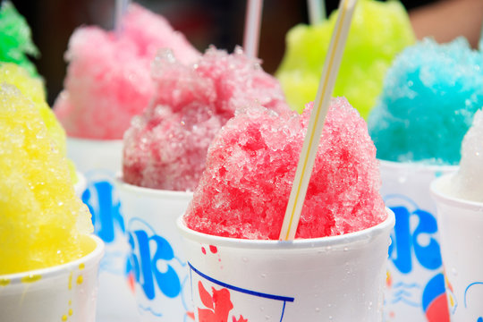
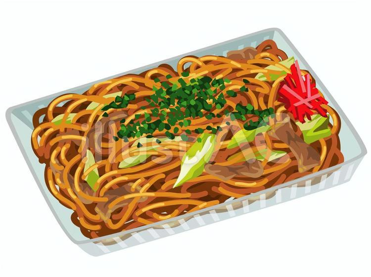

たこ焼き
外はカリカリ中はフワトロ食感でソースの香ばしい匂いが食欲をそそらせて、美味しい

かき氷
暑い夏には欠かせない、冷たくて甘いかき氷が最高です。

焼きそば
香ばしいソースの香りともちもちの麺が食欲をそそります。
日程：7月初旬
場所：長浜神社
説明：600年の歴史がある夏祭りで、塩九升通りや長浜通り、長池通りには露店で夜遅くまで賑わいます。 「風流見立て細工」が商店街の店先に並び、名物のおみか餠が販売されます。 神楽の奉納や、初日の夕方はこども御輿、中日の午後から夜半にかけて神輿が商店街を練り歩きます。
日程：７月下旬
場所：七瀬川自然公園
説明：「火・水・歴史・故郷」をテーマに、稙田地域で昔から行われていたという「柱松」や「万灯籠」をメインとした「ななせの火群（ほむら）まつり」が今年も七瀬川自然公園で開催されます。 火群には、「情熱の炎」という意味が込められていて、「住民を主役とする新たなまつりの実現を」という思いから、平成12年に初開催されました。 まつりの見どころは、高さ約11メートルの柱の先端に麦わら、松葉、花火などで造られた束を取り付け、松明を投げ上げて花火に点火するまでの時間を稙田地域8校区が競う「柱松」や、七瀬川両岸の約2キロメートルにわたり灯籠の明かりが続く「万灯籠」です。 暗闇に火の明かりが幾筋も灯る、美しい、勇壮なまつりをお楽しみください。
外はカリカリ中はフワトロ食感でソースの香ばしい匂いが食欲をそそらせて、美味しい
暑い夏には欠かせない、冷たくて甘いかき氷が最高です。
香ばしいソースの香りともちもちの麺が食欲をそそります。